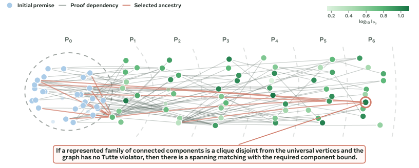
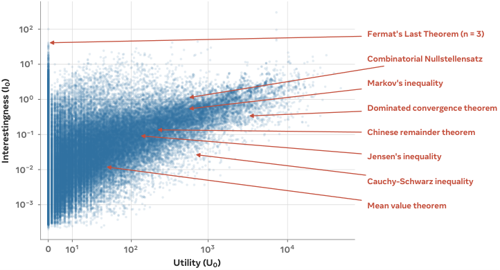
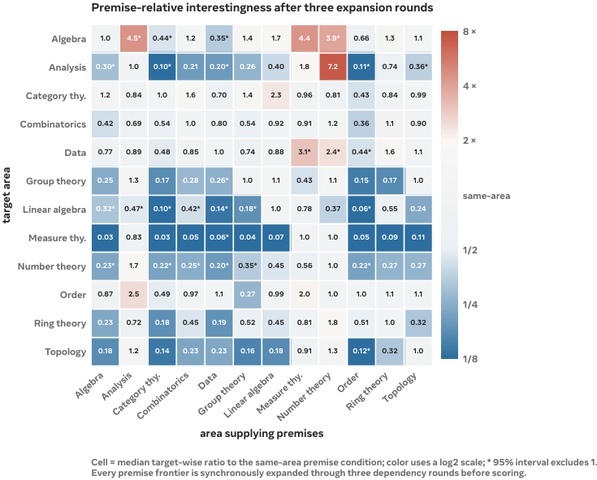

Uses Lean 4/Mathlib as ground-truth library to define proof-difficulty and interestingness metrics, training a model to generate out-of-distribution formal theorems.
Abstract
Recently, Large Language Models (LLMs) have been increasingly able to solve advanced mathematical problems, including many that have been open for decades. This opens the door to expansion of mathematical knowledge at unprecedented scale. Yet, while LLMs may be able to conjecture and prove more and more theorems, it remains open whether this new mathematical knowledge is interesting or useful. We define intrinsic interestingness of a theorem as the ratio between the length of its proof and the length of its statement. We show that this correlates strongly with an extrinsic measure of the downstream utility of a theorem. We identify the difficulty of a proof conditioned on a set of premises as a useful primitive for computing these metrics, and train a 27B model that predicts proof difficulty more accurately than frontier general-purpose models. Optimizing for our metric creates a model capable of producing more interesting theorems, while also reducing substantial or full overlap with Mathlib from 91.9% to 30.6%, showcasing the creation of more out-of-distribution math. We show that our system can generate candidate theorems, select the most interesting among them, and iteratively build on a self-expanding mathematical library. These metrics provide a practical and quantifiable signal for ranking conjectures and guiding proof search within formal mathematical libraries. Our framework provides a path towards self-expanding, machine-verified mathematical libraries that can choose worthwhile statements without relying on human-supplied targets.
Problem
LLMs can prove increasingly many theorems, but it is unclear whether the generated mathematical knowledge is interesting or useful. The challenge is quantifying interestingness to guide autonomous mathematical discovery without human-supplied targets.
Approach
An intrinsic interestingness metric is defined as the ratio of a theorem's proof length to its statement length, using Lean 4/Mathlib as a ground-truth codebase to measure conditional proof difficulty V(T|P). A 27B model is trained to predict this premise-conditioned proof difficulty via a reward combining grounding, Bellman-composition, and monotonicity constraints. Optimizing the interestingness metric steers the model to generate novel theorems, which are iteratively added as premises to build a self-expanding library.

Figure 6: Iterative forward discovery builds a reusable theorem graph. Here we showcase a result from our iterative forward discovery algorithm introduced in Section 3.4 . Green shade encodes \log_{10} total interestingness relative to P_{0} on a per-figure scale. The red lines trace the ancestry of the most interesting theorem introduced in P_{6} . More such graphs can be found in Figure 12 in Ap
Results
The intrinsic interestingness metric correlates strongly with an extrinsic utility measure. The trained 27B difficulty predictor outperforms frontier general-purpose models, and optimizing for interestingness reduces substantial/full Mathlib overlap from 91.9% to 30.6%, indicating more out-of-distribution mathematics.

Figure 3: Utility and interestingness are correlated. Each point is a mathlib theorem. Utility U_{0} , defined in Section 3.2 , is the number of lines of code saved across the library when the theorem is admitted as a premise, while interestingness I_{0} , defined in Section 3.1 , is the ratio between a theorem’s proof length and description length. Excluding the declarations with U_{0}=0 gives a

Figure 8: Full cross-area interestingness matrix. Each cell is the median target-wise ratio for the row area under premises from the column area versus the same-area premise condition. All premise frontiers are synchronously expanded through three rounds before new predictions are obtained. We select ten targets per area (120 total); four row areas contribute nine ratios after each excludes one no